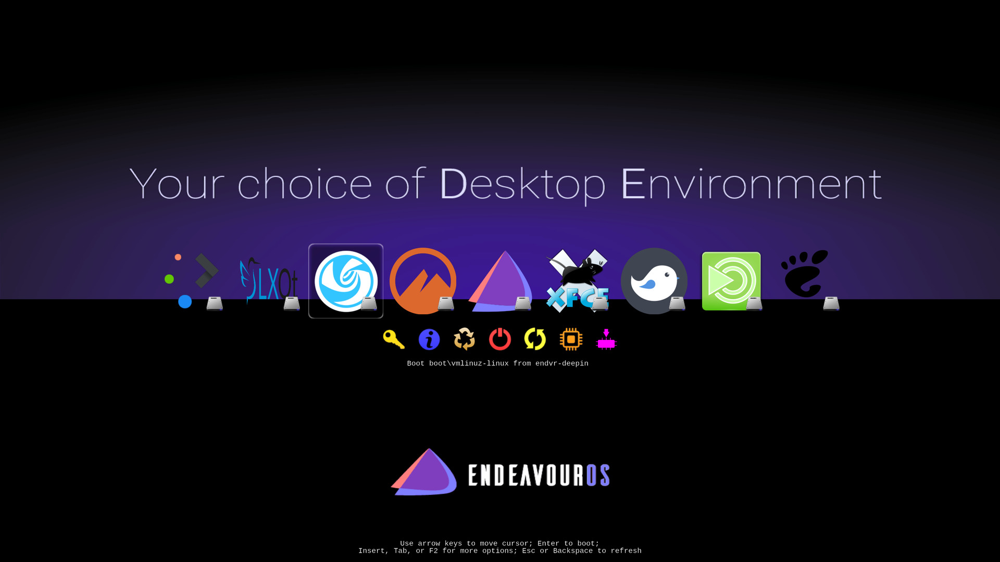
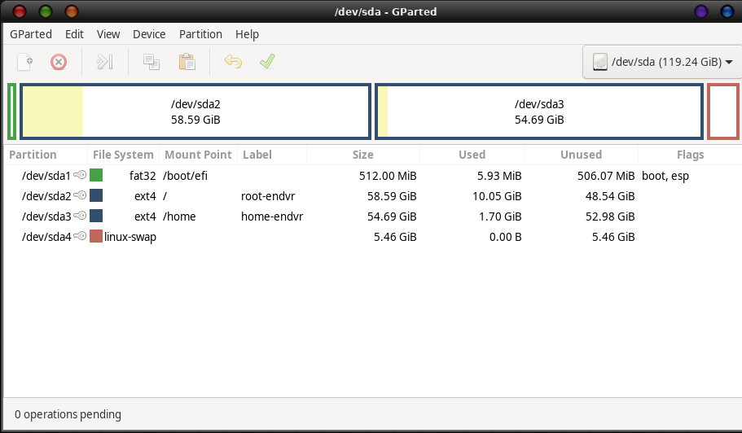
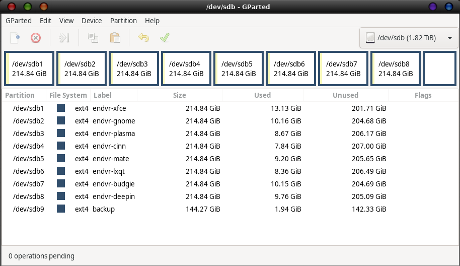
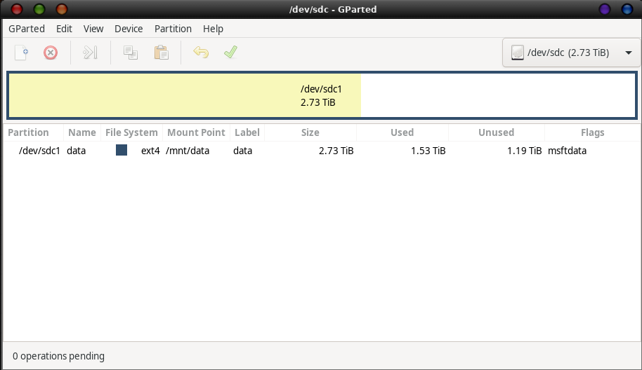

rEFInd - A Case Study
As has been noted many times, by many people, in Linux there is
always more than one way to skin a cat. Good... that persuaded my
furry "keyboard assistant" to leave the scene and allow me to type
unhampered. In this case, what we aimed to accomplish was a way to
try ALL the different Desktop Environments (DE's) that are
available from the EndeavourOS installer. Yes, all
eight. The final result is visible here:

As we go along I will detail the choices I made, the
configurations required, and hopefully the reasons for the choices
as well. rEFInd is extremely flexible, and nearly
everything is configurable, even what shows up on screen.
To start with, the first choice was to go with rEFInd
to manage the different DE's, rather than jam them all into one
installation. The resulting potential for confusion and trouble
that different setups, working in the same space, (and sometimes
on the same config files) is significant. We need some partitions
to work with to enable this, though. On the machine I am doing
this on, I have a small SSD, a medium-sized spinner (mechanical
hard drive), and a larger spinner. What I did was to use GParted
create the UEFI partition on the SSD, split the medium drive into
8 more-or-less even size partitions for each DE, and assign the
larger drive to data storage. After all else has been done, I will
put an extra DE on the SSD for speed, and as the default choice to
get work done on this system. Here is the setup I ended up with
(all partitions formatted as shown to save time and thought
later):

The most important partition here is the fat32 partition
(recommended size as seen) that will end up on /boot/efi for ALL
systems. I formatted it when setting up, so as not to have anything
else to keep track of while installing all the different systems!
You can see that I also created a swap partition - on this machine I
have 4Gb memory, so I could choose to hibernate with this setup. Of
more importance to note is that each partition has a filesystem
label chosen and entered - which makes it easy to tell what you did
with each of them when you go back later!

Here you can see all 8 partitions for DE's - along with a small one
for holding timeshift backups. Again - note the filesystem labels -
they will be very important when actually running this setup. And,
finally:

Very straightforward - and a great way to keep ALL your data
organized, as well as accessible from all your different DE's. My
habit is to create the standard directories on this (Documents,
Downloads, Music, Pictures, Videos) along with others that come up
often (Books, Calibre Library, Public, Templates) - and set up soft
links to them all from each DE. (example command from ~ on
any DE:
ln -s /mnt/data/Downloads Downloads.
Now that the basic working framework has been assembled,
we can load all the DE's. On each install, remember to select the
small fat32 partition, KEEP (rather than format) and set the mount
point to /boot/efi. The only other choice to make is
on the other drive (sdb) - select the partition that will be the
/ (root) of the particular system you are installing.
Hopefully you made notes as to which was to go on which! (if you
have an aversion to paper, you could note it on your phone :) It is
not necessary to format these either, if you formatted them when you
created them. Alternate filesystems are beyond the scope of this
discussion - after all, more than likely these are test beds, not
daily drivers!
I have found the installer to be very reliable, and got through the
entire process with no mis-steps. Hopefully you have too - but if
not, a redo of one install at this point is not a huge problem. If
you select one of the DE's to serve as the first, (most easy is to
utilize the latest one - as its grub will be the one to show up on
the reboot) - let it load up, and install rEFInd on it (as per the
wiki - basically just
yay refind
and
refind-install
At this point you could check that each of the DE's boots from rEFInd
directly. At this point I should mention a possible problem,
especially with older machines. Some of the earlier UEFI BIOS's have
insufficient room in their NVRAM for so many entries! You can
tell this has happened because not all of the entries you would
expect will show up, even if you follow the arrows to see them all.
Luckily, rEFInd has a way around this problem too.
If you edit the file found at
/boot/efi/EFI/refind/refind.conf , an entry
reading use_nvram false will solve the difficulty.
(you can just uncomment the existing entry if you choose).
On a previous wiki entry, I described how to copy the EndeavourOS
logo into the EndeavourOS directory of /boot/efi/EFI/refind/icons,
but if you try that now you will find the problem with this simple
solution - you will have a row of identical icons! Tuxes if you
haven't tried to change anything, or EndeavourOS logos if
you have. Obviously this is confusing, so we must utilize another
way. You will start to notice the value of having clearly
identifiable partition filesystem labels now, as rEFInd
shows what file and location each entry will be booting with as you
highlight it. In the interests of keeping things simple, what I
suggest is to boot each DE in turn, locate a suitable logo icon for
it - preferably in .png format - (easily done online, often in
WikiMedia commons) and copy it to the filename of your boot file. An
example would be
sudo cp ~/Downloads/cinnamon-logo.png /boot/vmlinuz-linux.png
obviously substituting the actual name and location of the logo icon
file you found for the first part of that command. When this is
complete you should be able to boot any of them from rEFInd
without a problem. But - there are still a few things to do for
perfection.
If you have an Intel or an AMD processor, there are microcode image
files that should be loaded when you start up. As far as I can tell,
the installer includes them automatically on installation, but they
can be installed the normal way if you don't have them. The easiest
way to ensure they are loaded correctly is to do the following - 8
times! :)
First - I am going to assume that you have a place to store things
that will be accessible from all DE's. In my case, the standard
directories are on a data drive that all can see, but a thumb drive
will do fine as well. You will need the UUID's of the root /
partition from each DE system. I suggest that you:
sudo blkid > UUIDFile
which will create a listing you can refer back to on each system as
you create the entries. Copy this onto whatever common drive you
have. What is needed is a configuration file, refind-linux.conf,
to be located in the same directory as your boot file (and logo
file). Here is a copy from one of mine:
"Boot using default
options"
"root=UUID=b46c18cf-fa73-4255-b1b0-920904264e6b rw quiet
add_efi_memmap initrd=/boot/amd-ucode.img
initrd=/boot/initramfs-%v.img"
"Boot using fallback initramfs"
"root=UUID=b46c18cf-fa73-4255-b1b0-920904264e6b rw
add_efi_memmap initrd=/boot/amd-ucode.img
initrd=/boot/initramfs-%v-fallback.img"
"Boot to
terminal"
"root=UUID=b46c18cf-fa73-4255-b1b0-920904264e6b rw
add_efi_memmap initrd=/boot/amd-ucode.img
initrd=/boot/initramfs-%v.img systemd.unit=multi-user.target"
What is needed is to substitute your root UUID (for the current
system) into a copy of this config file - after ensuring that the
correct micocode file is referenced. If you have an intel the the
file is intel-ucode.img not amd-ucode.img and
the entry should be modified accordingly. There are a number of ways
(as always) to get the right UUID into the copy of the config file,
including the file created earlier (UUIDFile) into your text editor,
enter a few blank lines, then paste in this example
refind-linux.conf, and carefully copy paste the correct UUID=
portion over top of the existing entry, remove the excess lines
(everything NOT from the example above!), and save as
/boot/refind-linux.conf. This needs to be done (carefully) for all 8
systems. If you get a UUID wrong - it will NOT boot!
Now we come to the configuration of rEFInd itself -
that only has to be done once for all 8 systems to recognize it.
Remember, the EFI directory is visible and mounted on /boot/efi/
in ALL systems! The file to alter is
/boot/efi/EFI/refind/refind.conf. The entries we make
will enable the refind-linux.conf files to operate correctly, speed
up the rEFInd scan while booting, stop showing the
various grub loaders, and, optionally, change the appearance of rEFInd
to better suit.
1. Enable the refind-linux.conf entries
You may have noticed that the refind-linux.conf entries
contained a %v sequence. This allows for version info to
change, and still be properly recognized. The entry needed is:
extra_kernel_version_strings
linux-hardened,linux-zen,linux-lts,linux
This is commented out in the original refind.conf file - we need it
to be active
2. Change the directories that get scanned.
The relevant entry here is
dont_scan_dirs ESP:/EFI
You can add others you DON'T want scanned if needed, but it removes
the grub loaders from view for me.
3. Change the banner:
The default banner is the rEFInd logo at the top of
the screen. However there are a few tricky bits about this. This is
a small file, but the program uses the colour setting of the top
left pixel as the background for the rest of the screen. SO - to get
a grey background, you could load the file
/usr/share/refind/refind_banner.png into a paint
program, change only the top left pixel to the shade of grey you
want, and then save. If you make an entry in refind.conf to load
this new banner
banner newbannername
then that will do the job. The banner, however, can also be a
full-screen image if you want. In this case, the usual banner will
not be seen, unless you integrate it with a paint program into
whatever image you choose to display instead. In my setup, I use an
image called eos-empty.png - which gives me the look seen in the
screen shot at the beginning of this case study.
4. Change icon sizes:
When I first got this set up, there was only room on the screen for
6 icons - I run with 9! While it worked fine as is, I decided I
wanted them all visible from the start. Depending on your
resolution, this may not be needed (they fit fine on 3840x2160 - not
so much on 800x600!). Fortunately rEFInd has a way
to hadle this too.
There are entries for small_icon_size and big_icon_size ion the
file, followed by a single number (the icons are square, only 1
entry is needed). Default sizes are 256 for big, and 96 for small -
set them as needed to scale them down. Big icons are main logos,
small are the tools underneath.
This completes the setup I am using, but more can be adjusted if
needed - the screen resolution can be specified (maybe - hardware
dependent), the mouse might be possible to enable, touch might be
possible to enable - if present. There is even a text-only mode, but
I haven't tried it. From here it is up to you how much you do to
alter/improve things - but you should have picked up some tips that
will help you on your way.
It may be important to note that the details of this case study only
apply reliably to EndeavourOS. Many other distros follow the same
methods, but some do not. If you are adding a different Arch based
system, the main thing to look out for is that boot files (and thus
the logos and the refind-linux.conf) may be located elsewhere -
perhaps in the root. In that case, the refind-linux.conf entries
would need to be changed to reflect the new path to boot and .img
files. If another distro is added - keep in mind that many of them
integrate the microcode in different ways, and the refind-linux.conf
would not need to load them. Looking through the
grub entries generated by an install of this other system should
tell you what is needed to successfully boot. Another entry that may
come up is:
resume=UUID={uuid of swap file}
which would be there to enable hibernation. This would be added to
the refind-linux.conf file as well. There is much more to the
capabilities and special-case handling of rEFInd,
especially for handling WIndows and Mac, but those details are best
left to the main documentation at:
https://rodsbooks.com/refind
and to the Archwiki entries that apply.
Freebird54